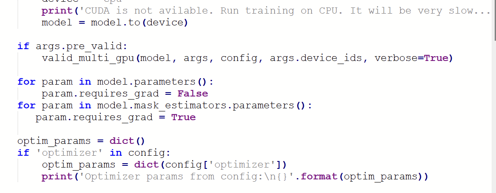
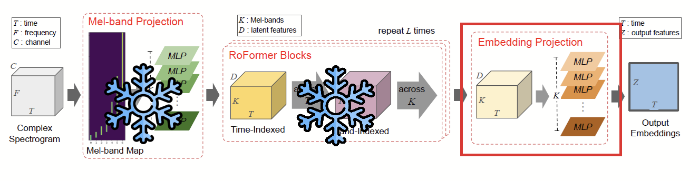
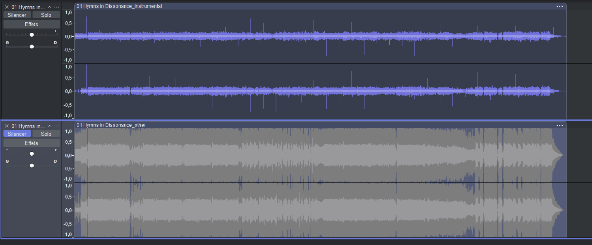
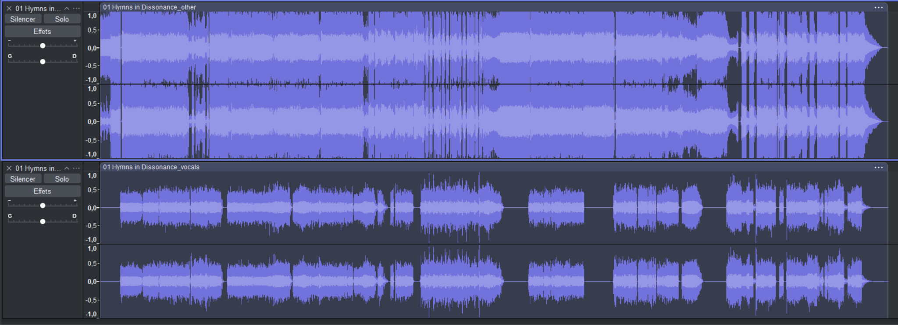
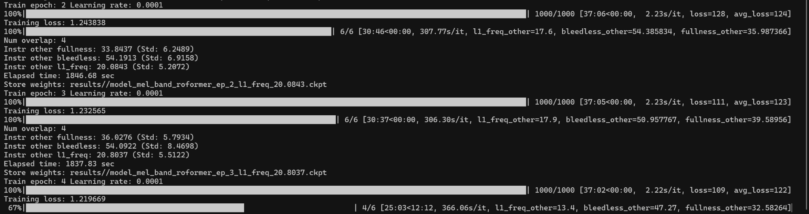

Training from scratch
You can train with no checkpoint at all. It is the right move when fine-tuning simply cannot give you the model you need — and it is also the slowest, least forgiving path.
Fine-tuning adjusts an existing model toward your data. Training from scratch builds the representation itself, which is what you want when your target is far away from anything published. In the source guide this was the route taken for a personal metal dataset: pre-train on a laptop to get something decent, then move to cloud GPUs with different parameters to push it further.
Remove --start_check_point from your training command. That is it — the trainer will initialise the weights itself.
Metrics will look terrible early on — not because something is broken, but because the model started from noise. On a laptop they will look even worse, because of the hardware limits. On cloud hardware the curve is smoother; start with a smaller chunk size until it converges, then raise it.
What "big" actually means
A Roformer at batch_size: 4 fills the entire 140 GB VRAM of an H200. Plan your chunk size and batch size around the card you have, not around the config's defaults.
Converge small, then grow
Small chunks converge faster and teach the core separation. Once the metrics stop climbing, increase chunk_size and let the model learn longer musical context.
Shifting a model's focus between stems
A special case worth knowing: taking a model that separates vocals and turning it into one that separates instrumentals — without retraining everything from the ground up.
This one came from a real problem: needing to move a vocal model's target over to the instrumental. After a series of unsuccessful attempts, unwa suggested a transfer-learning approach and supplied the code for it.
The patch
for param in model.parameters(): param.requires_grad = False for param in model.mask_estimators.parameters(): param.requires_grad = True
Place it just above line 203 in train.py, where the optimiser parameters are assembled:
optim_params = dict()

Why this works
unwa's reasoning: "in my experience, it is the MaskEstimator that changes significantly when the target is changed." Freezing the Mel-band projections and the Roformer blocks and training only the final masking modules is enough to move the model from one target to another — and it cuts training time dramatically.
Mel-Roformer · what the patch trains
requires_grad = False for every parameter, then True again for model.mask_estimators. Everything up to the embedding projection keeps the knowledge the original model learned; only the final modules adapt to the new target. The same diagram, as it appears in the original architecture figure, is Figure 9.2 below.

- It will not fine-tune the other blocks, so it is good for switching targets — not for full training of a new model.
- It does not always work. If the output does not improve, remove the patch from
train.pyand train normally.
How it actually went
The run was taken to epoch 12 to complete the switch, plus 2 further epochs to confirm the model stayed on the instrumental target — the second stretch purely to be sure it was not about to drift back.
If the learning rate is too high for this second phase, the model starts doing strange things — for example reporting values such as "inst other fullness: 49". The most likely cause is that it learned too quickly. Compare the two results below.


Fullness models and model fusion
Fullness measures how complete the target stem sounds. Training a model specifically for it takes three steps — and produces a specific, important artefact.
-
Patch the architecture switch in train.py
Find the line beginning
if args.model_type in ['mel_band_roformer', 'bs_roformer']:and place a1before eithermelorbs— or search the file for anything containingroformer. -
Use the multi-STFT loss
Pass
--use_multistft_lossas your loss argument on the training command. -
Add the loss block to your config
These values are a working starting point; they can be adjusted.
loss_multistft: fft_sizes: - 1024 - 2048 - 4096 hop_sizes: - 512 - 1024 - 2048 win_lengths: - 1024 - 2048 - 4096 window: "hann_window" scale: "mel" n_bins: 128 sample_rate: 44100 perceptual_weighting: false w_sc: 0.0 w_log_mag: 1.0 w_lin_mag: 0.0 w_phs: 0.0 mag_distance: "L1"
Training this way gives you fullness models with a lot of noise. That is the trade this loss makes: a fuller sounding stem, at the cost of added noise. Judge whether that is a good deal for your material before you build a workflow around it.
Model fusion (Sucial's script)
Not strictly training, but part of the same toolbox: a fusion script that merges two checkpoints into one, available at huggingface.co/Sucial/…/model_fusion.py. Download the .py file and drop it into the MSST folder.
- All checkpoints must share the same target. You cannot fuse a vocal model with an instrumental model — two instrumentals both need their stem labelled
other. - Possibly both checkpoints must share the same base architecture settings (for example
dim 384,depth 6,mask_estimator_depth 2). This one is not confirmed. - Weights are set inside the script and should sum to
1— for example0.5and0.5while testing.
Replace the placeholder checkpoint names in the script with the actual YAML names of the checkpoints you want to combine.
Running the training locally
Local training is the simplest loop there is: open a shell, paste the command, let it run. Your GPU will spin hard — that is how you know it is working.
cd C:\path\to\Music-Source-Separation-Training python train.py --model_type mel_band_roformer --config_path config.yaml --results_path results/ --data_path C:\data\dataset --dataset_type 2 --num_workers 4 --device_ids 0 --start_check_point results/model.ckpt --valid_path C:\data\validation --metric_for_scheduler sdr --metrics sdr fullness bleedless

1 2 3 4 5 6- Epoch and learning rate — which pass this is, and the rate in force. It moves when the scheduler reacts to a stalled metric.
- Training loss — how far this epoch's output is from the target. You want it trending down; the
avg_lossline next to it is smoother than the instantaneous number. - Num overlap — how many inference passes were averaged to produce the numbers below. Set it to
1while training. - Per-stem metric summary — the averaged verdict for the target stem: fullness, bleedless, l1_freq (and sdr if you requested it). This is the block to compare with the previous epoch.
- Elapsed time — wall-clock seconds for the epoch, which is how you work out what the rest of the run will cost.
- Store weights — where the checkpoint was written. This is the file you load later to separate audio.
How to read the log
| Line | What it tells you |
|---|---|
| Train epoch | Which epoch is running now. It starts at 0 and continues as long as you let it. |
| Learning rate | The rate in force for this epoch — a value such as 1.0e-04, moved by the scheduler when the metric stalls. |
| First progress bar | Progress through the num_steps of the epoch, with elapsed time versus estimated time, and seconds per iteration (how fast the run is). |
| Training loss | How far the output is from the target — you want this trending down. |
| avg_loss | The average training loss across recent steps; smoother than the instantaneous number. |
| Second progress bar | Validation progress. It feels long on purpose if you validate with full tracks — and it reports n/n, how many validation tracks remain. |
| l1_freq / sdr | Per-track separation quality for the stem being validated. In the example log, track 4 of epoch 3 sat around 13.4. |
| fullness / bleedless | The same per-track numbers for the target stem: how complete it is, and how much of the other stem leaked in. |
| Num overlap | The inference overlap used to produce these results — 4 in the example. Set it to 1 to make everything much quicker. |
| Elapsed time | Wall-clock seconds for the epoch, useful for working out what the rest of the run will cost. |
| Instr other … | The averaged verdict for the instrumental stem with this checkpoint: fullness, bleedless, l1_freq and SDR. This is the number to compare against the previous epoch. |
Observed behaviour worth internalising: if fullness goes up, bleedless tends to go down — and the reverse. A stem cannot be maximally complete and maximally clean at the same time, so decide which trade your material needs before you chase a number.
While it runs
Training is a waiting game. Locally you cannot do anything GPU-heavy alongside it — no games, no renders, no video export — so plan something else for the hours. That changes on cloud hardware, where you are paying for the privilege of not caring about the machine.
Running the training in the cloud
A step-by-step walkthrough for renting a GPU on vast.ai. It is genuinely unintuitive, and the existing documentation is not written for this use case. Follow the steps in order.
- Step 01Upload to DriveRepo plus both datasets, with at least 100 GB free
- Step 02Connect the drivevast.ai → CLOUD → Connect Google Drive
- Step 03Rent a GPUPyTorch (cuDNN) template, CUDA 12.4, SSH + Jupyter
-
Step 04Pull the dataCreate a dump folder, then download into
/TRAINING_STUFF - Step 05Open a terminalcd, install requirements, OpenBLAS export, train
- Step 06Training startsOnce “Collecting Metadata” appears, you are running
-
Put everything on Google Drive
Upload the training repository and both datasets into a folder of your choosing, and make sure you have at least 100 GB of drive space free. vast.ai offers a direct connection to Drive under CLOUD on the site (below INSTANCES): click Connect Google Drive, name the connection, and authorise it.
-
Rent a GPU
In the SEARCH section, pick the PyTorch (cuDNN Runtime) template with CUDA 12.4, SSH and Jupyter. Give the instance enough disk space — it is included in the hourly price, so larger storage costs more per hour.
-
Create a dumping folder, then pull your data down
Once the instance appears under INSTANCES, wait for it to finish loading and enter it. Create a folder for the data (in the source guide it was simply called
TRAINING_STUFF). Do not close the page: go back to INSTANCES and click the cloud icon on the instance — a message appears about uploading or downloading data from cloud providers. Enter the source folder and the destination path, for example/TRAINING_STUFF, and let it run. -
Open a terminal and adapt the training command
When the transfer finishes, your data is visible in the Jupyter file browser. Take the training command from earlier in the guide, point
--data_pathand--valid_pathat the uploaded folders, and — this is the part people get wrong — put a slash both before and after the path:--data_path /TRAINING_STUFF/DATA/2stem_metal_dataset/ --valid_path /TRAINING_STUFF/DATA/validation/
Then open File → New → Terminal in Jupyter.
-
Run the four commands in sequence
In the terminal, one after the other:
- change directory into the repository
- install the requirements
- the OpenBLAS export (it surfaced at the metadata stage in the source run, and turned out to be unrelated to the actual problem — but it costs nothing to set)
- the training command
-
Install the missing modules as they appear
Expect
No module named X. Install it, paste the training command again, repeat until you see the metadata collection stage — at which point training starts properly. The modules that came up in the source run:wandb,soundfile,auraloss,audiomentations,pedalboard,ml_collections,omegaconf,einops,beartype,rotary_embedding_torch.
At the end of the requirements install you will likely see:
ERROR: Failed to build installable wheels for some pyproject.toml based projects (wxpython, diffq, pesq)
Two solutions, either of which works:
- If
pesqis the failure, install the build toolchain and pin numpy:sudo apt-get install build-essential, thenpip install numpy==1.26.4. - Or simply delete
wx-pythonfromrequirements.txt. It is only used by the GUI, not by training, and it is the package that breaks requirements installs on some systems such as Colab.
Don't pay for a stuck run
Watch the first few hundred steps. If loss is flat or the log is repeating errors, stop the instance rather than hoping — hourly billing continues while you sleep.
Test locally, then rent
Run the same command on your own machine for a handful of steps. It proves the config, the dataset type and the paths before any cloud money is spent.